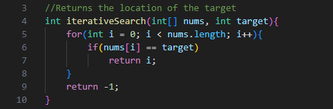

Searching
Searching is very useful when looking for a particular index or checking if an element exists in an array.
One situation where you would use searching would be to locate a particular book on a bookshelf.
There are two major categories of sorting: sequential search and interval search.
Sequential Search
Sequential search is where you look at each index of the array and check for the desired element.
Interval Search
Interval Search is designed for searching in sorted datasets, as you can eliminate half the searched interval after each search. These algorithms are much faster than Sequential Search. One example is Binary Search.
Binary Search works by recursively splitting a dataset down the middle based on whether the target is bigger or smaller than the element in the middle.